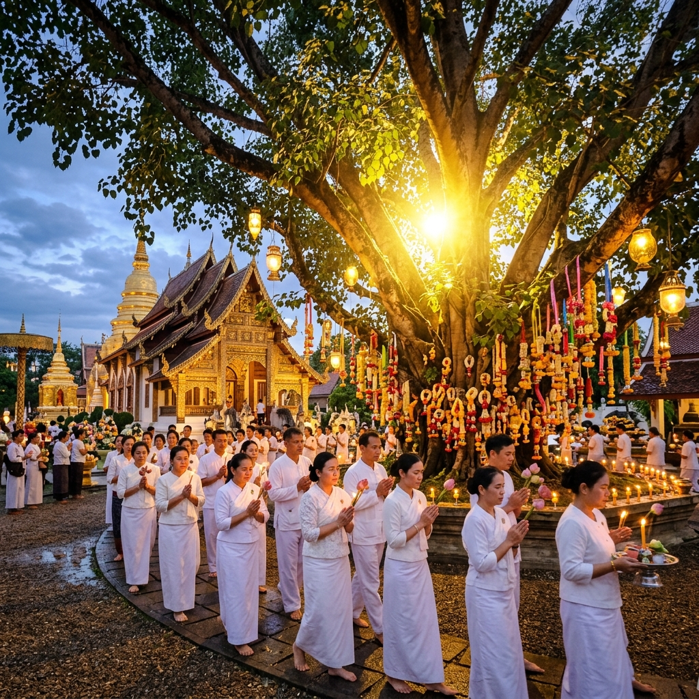
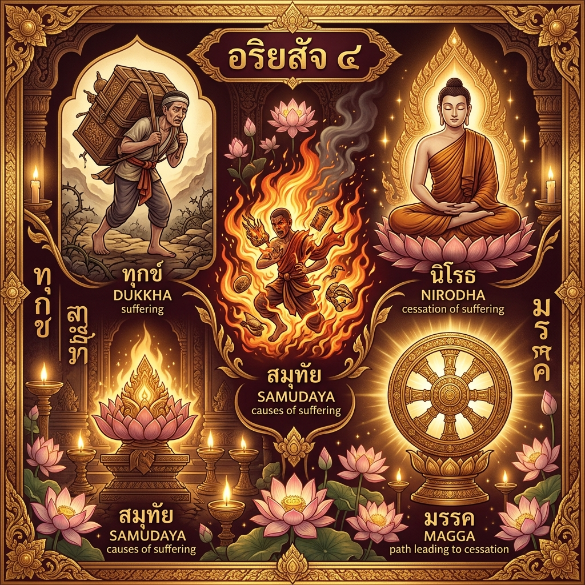

ความหมายของวันวิสาขบูชา
"วิสาขบูชา" มาจากภาษาบาลี คือ "วิสาขะ" หมายถึง เดือน 6 (เดือนวิสาขะ) และ "บูชา" หมายถึง การบูชา รวมความว่า "การบูชาในเดือนวิสาขะ"
วันวิสาขบูชาตรงกับวันขึ้น ๑๕ ค่ำ เดือน ๖ เป็น วันที่สำคัญที่สุดในพระพุทธศาสนา เพราะในวันเดียวกันนี้ พระพุทธเจ้าทรงประสูติ ตรัสรู้ และปรินิพพาน ในวันเดียวกัน แต่ต่างปี
องค์การสหประชาชาติได้มีมติรับรองในปี พ.ศ. ๒๕๔๒ ให้วันวิสาขบูชาเป็น "วันสำคัญสากล" (International Day) โดยมีชื่อว่า "United Nations Day of Vesak"
📚 ที่มา: สหประชาชาติ มติ A/RES/54/115เหตุการณ์สำคัญ ๓ ประการ
เหตุการณ์ที่เกิดขึ้นในวันขึ้น ๑๕ ค่ำ เดือน ๖ ในแต่ละปี
ประสูติ
เจ้าชายสิทธัตถะ โคตมะ ประสูติ ณ สวนลุมพินีวัน (ปัจจุบันอยู่ในประเทศเนปาล) ทรงเป็นพระราชโอรสของพระเจ้าสุทโธทนะ
ตรัสรู้
ทรงตรัสรู้อริยสัจ ๔ ณ ใต้ต้นพระศรีมหาโพธิ์ ริมฝั่งแม่น้ำเนรัญชรา เมืองพุทธคยา ประเทศอินเดีย ทรงพระชนมายุ ๓๕ พรรษา
ปรินิพพาน
ทรงปรินิพพาน ณ ป่าสาลวัน เมืองกุสินารา ประเทศอินเดีย ท่ามกลางพระสาวกและประชาชนจำนวนมาก

อริยสัจ ๔ — ความจริงอันประเสริฐ
สิ่งที่พระพุทธเจ้าทรงตรัสรู้ในวันวิสาขบูชา คือ อริยสัจ ๔ ความจริงอันประเสริฐ ๔ ประการ ได้แก่
- 1️⃣ ทุกข์ — สภาวะที่ทนอยู่ยาก ความทุกข์ในชีวิต
- 2️⃣ สมุทัย — เหตุแห่งทุกข์ คือตัณหาและกิเลส
- 3️⃣ นิโรธ — ความดับทุกข์ คือนิพพาน
- 4️⃣ มรรค — ทางดับทุกข์ คือมรรค ๘ ประการ
กิจกรรมที่พึงปฏิบัติในวันวิสาขบูชา
- 🙏ทำบุญตักบาตรและถวายภัตตาหารแด่พระสงฆ์
- 🕯️เวียนเทียนรอบอุโบสถ ๓ รอบในเวลาค่ำ
- 🌺ฟังพระธรรมเทศนา สวดมนต์ ไหว้พระ
- 📿รักษาศีล ๕ หรือศีล ๘ นั่งสมาธิภาวนา
- 🌳ปล่อยนก ปล่อยปลา เพื่อความเมตตา
- 📚ศึกษาธรรมะและเผยแพร่คำสอนพระพุทธเจ้า
📚 แหล่งอ้างอิง
- กรมการศาสนา. (2566). วันวิสาขบูชา. www.dra.go.th
- United Nations. (1999). Resolution A/RES/54/115: Vesak. www.un.org
- Wikipedia TH. (2566). วันวิสาขบูชา. th.wikipedia.org